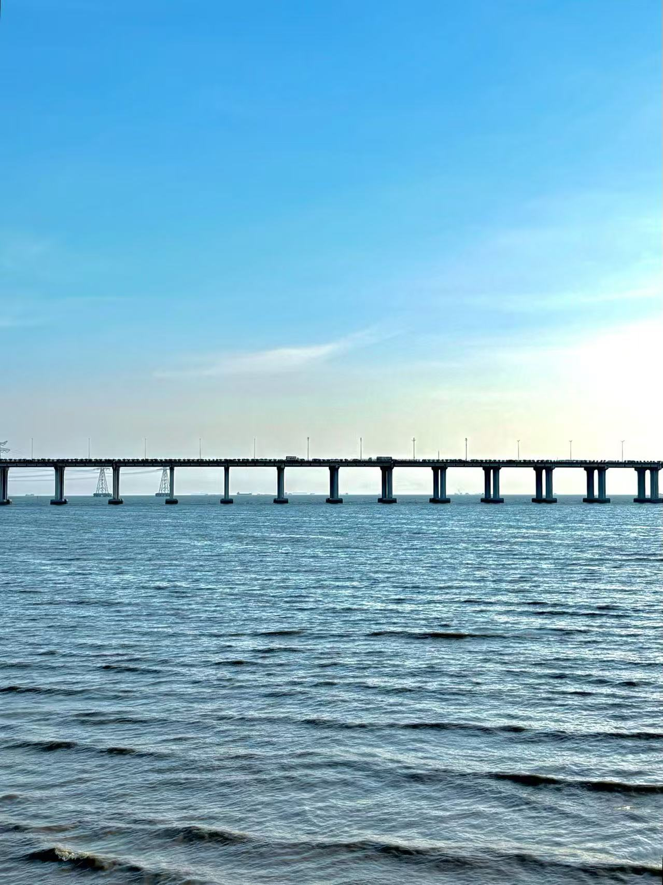
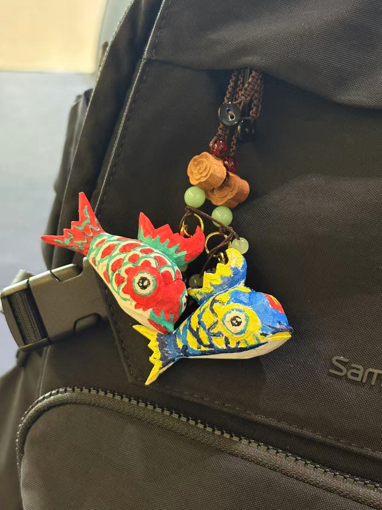
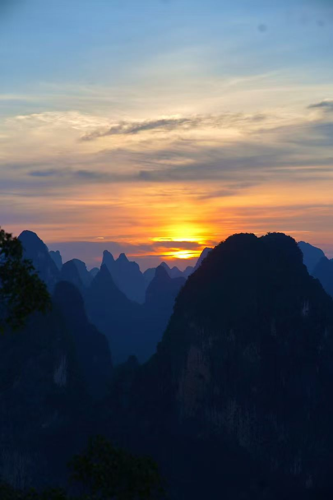
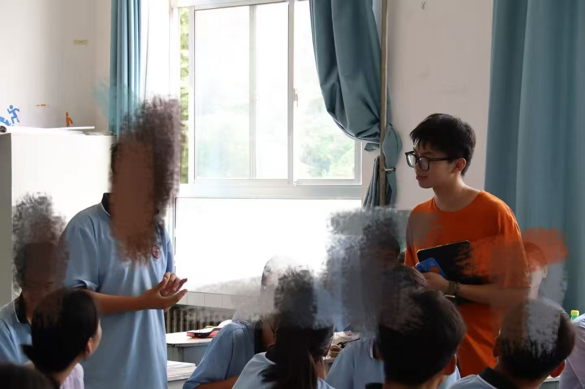
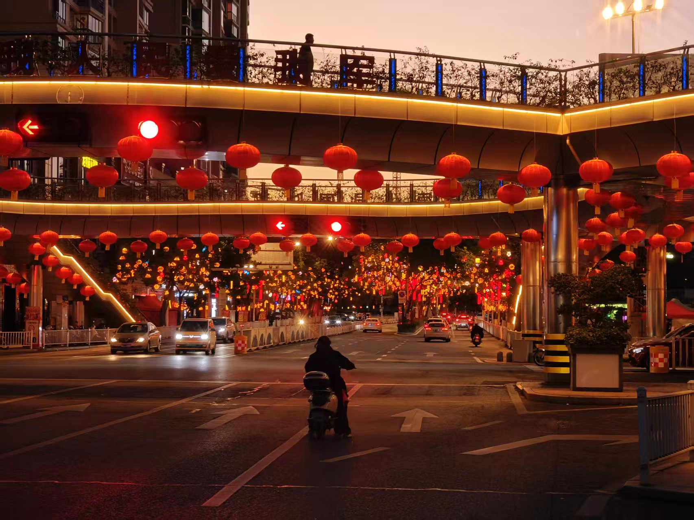
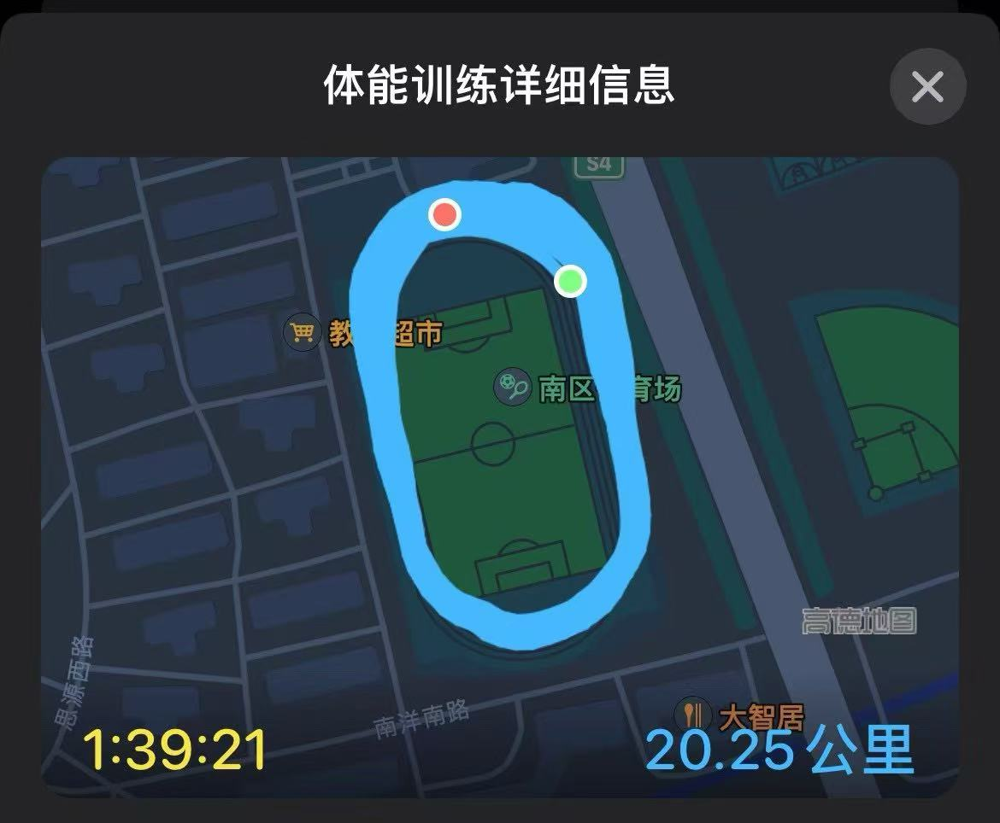
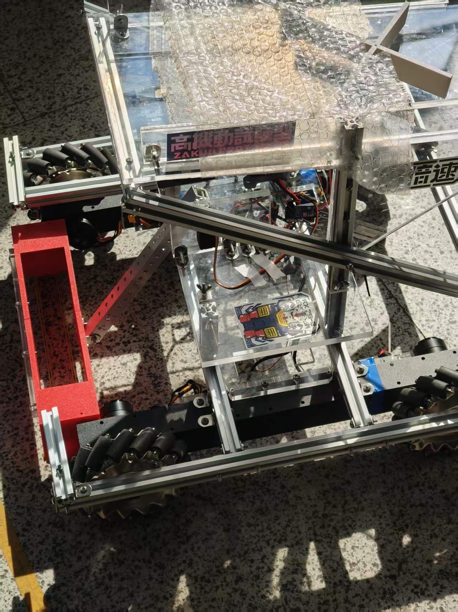
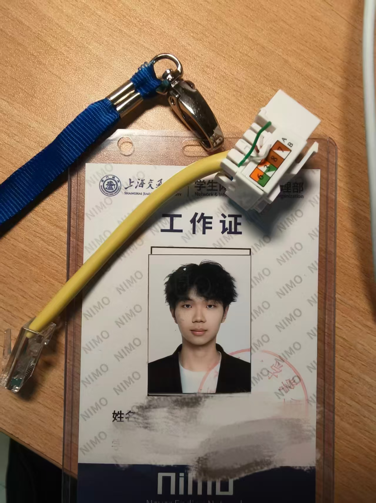
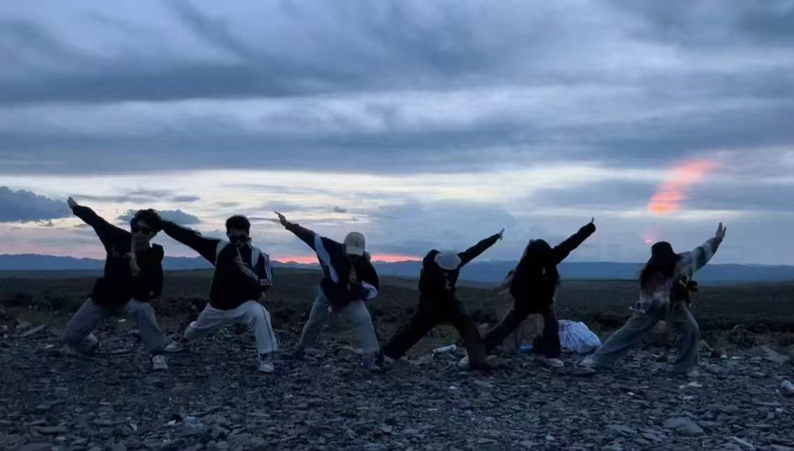

Lifes
A visual archive of moments beyond research.

Shenzhen (深圳)My internship brought me to Shenzhen for the first time. This photo captures an afternoon walk through a park. [2026.07]
Shexian, Huangshan (黄山歙县)My first trip with my better half took us to this slow-paced county town, where we shared an unforgettable journey. The photo shows a local Shexian DIY craft—can you guess which one is mine? [2026.07]
Guilin + Liuzhou (桂林 + 柳州)A journey through the mountains and waters of Yangshuo in Guilin and Liuzhou. [2025.08]
Volunteer Teaching in Gansu, China (中国甘肃支教)Together with 11 fellow volunteers, I spent two unforgettable weeks with high school students from three classes at Tunzi Middle School in Qingyang, Gansu. [2025.08]
Lunar New Year Atmosphere (年味)Festive red lanterns lit up my hometown of Dehua, filling the streets with the warmth and spirit of the Lunar New Year. [2025.01]
20.25 km RunningOn January 1, 2025, I attempted my first near-half-marathon run—an exhilarating and deeply satisfying experience. I will always remember the support and help of my two dear friends, SF Huang and Jackie Chan. [2025.01]
Red Comet Robot (“红色彗星”机器人)During my first semester of college, I participated in the RoboMaster campus competition, which marked the beginning of my journey exploring robotics. [2024.10]
NIMO — Network & Information Management Organization (SJTU 网管部)I joined Shanghai Jiao Tong University's Network & Information Management Organization during my freshman year, where I met a group of fascinating people and picked up plenty of useful—and occasionally unusual—networking knowledge. [2024.09]
Travel in Western Sichuan (川西)I set out alone to experience the beauty of nature with five people I had never met before. We later became close friends and have remained so ever since. [2024.08]